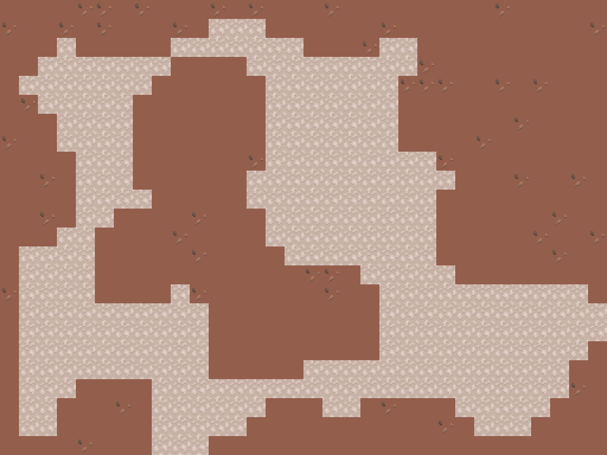
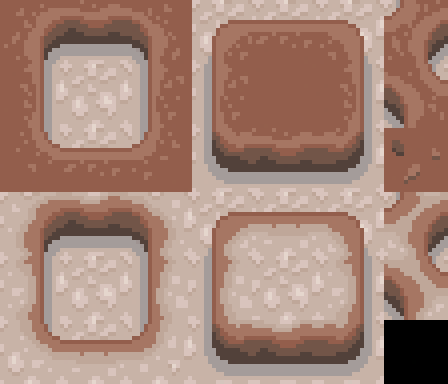

Cave Generator
How it works
The cave is generated using an algorithm called Cellular Automata.
1. Randomize cells
To start with, each cell in the grid is randomly assigned to be either a floor or a wall.

2. Check neighboring cells
Next, each cell is updated based on the 8 cells around it. If 5 or more neighbors are floors, the cell becomes a floor too. Otherwise it becomes a wall. This is repeated a couple times until a nice looking cave has formed.


3. Clean up
The walls are smoothed a little, and caves that are too small are filled in.
4. Make it pretty
Finally, the edges between the walls and floors are drawn using the tileset below.
